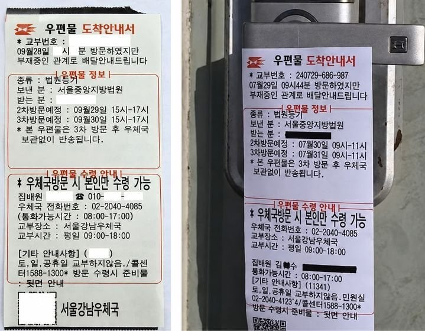

왼쪽 : 진짜 , 오른쪽 : 위조
최근 등기우편물 배달 과정 중 수취인 부재 시 부착하는 '우편물 도착안내서'를 정교하게 위조해 전화나 QR코드 접속을 유도한 뒤, 개인정보를 탈취하는 신종 피싱 범죄(레터피싱) 의심 사례가 발생함.
진짜 : 포스트잇과 같이 깔끔히 탈부착됨 , 뒷면(접착면)에는 우편물 방문수령 안내사항이 인쇄되어 있음.
위조 : 투명 테이프로 붙여져 있거나 떼어낼 때 지저분하게 찢어지는 특징이 있음.
개붕이들도 조심해
사회 인프라 건드는 애들은 잡아 죽여야됨